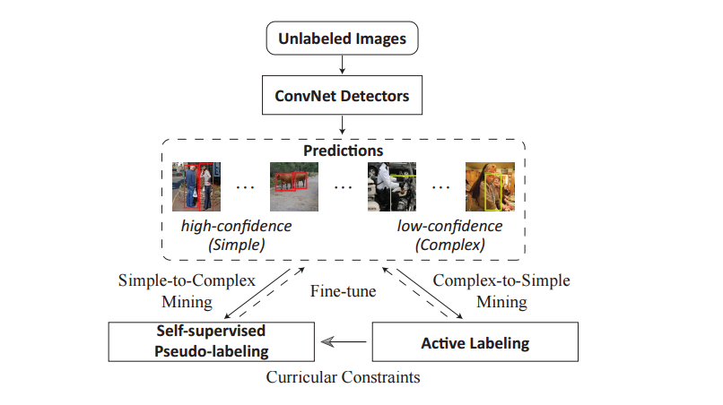
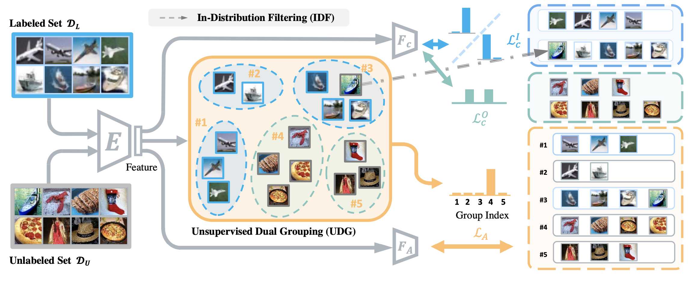
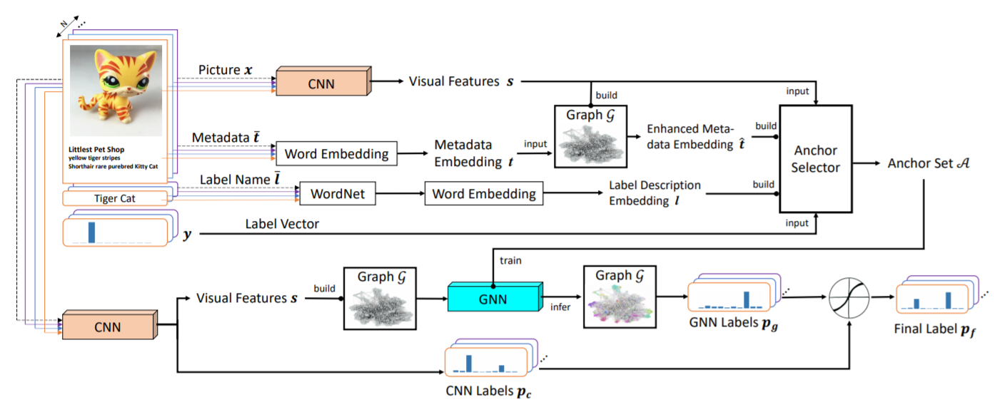
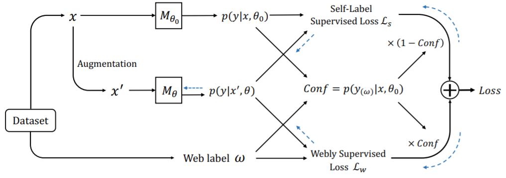
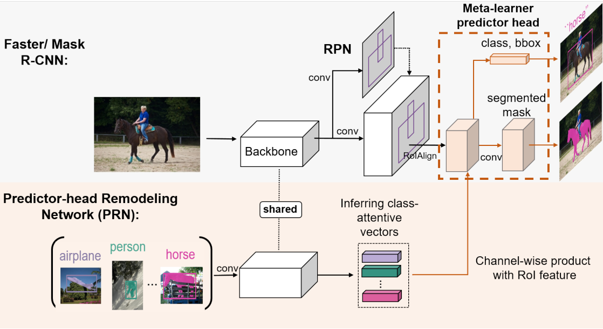
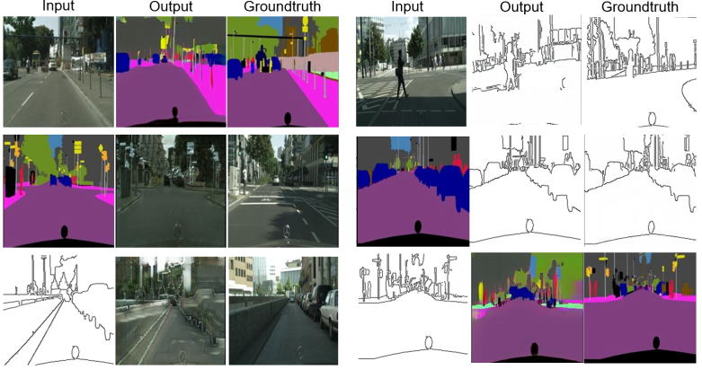
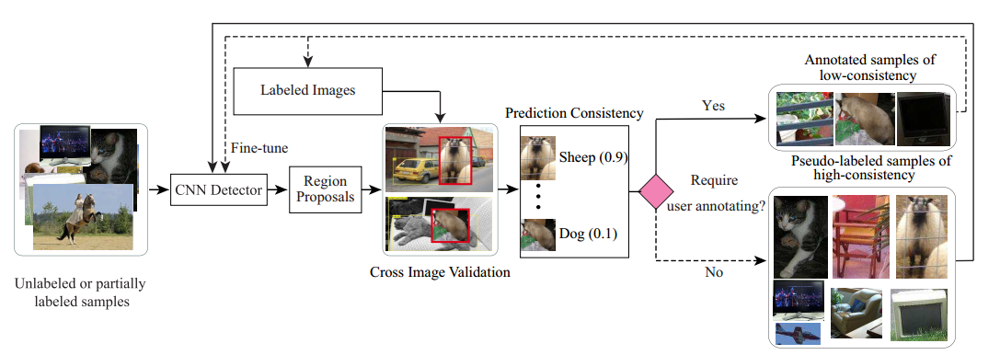
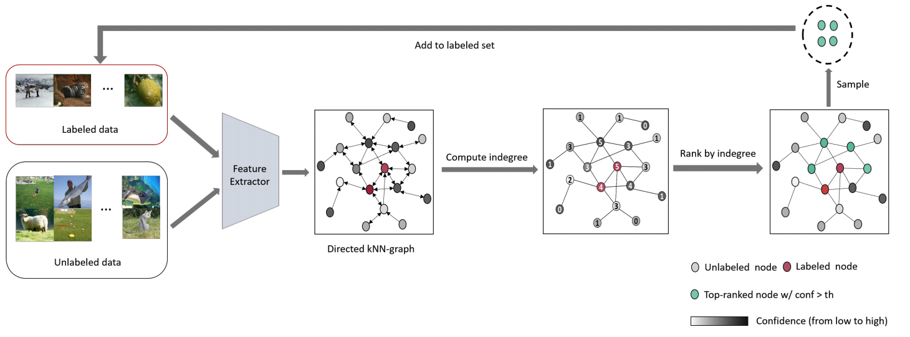

Publications论文
Filter筛选
Journal期刊 1
-

Cost-Effective Object Detection: Active Sample Mining with Switchable Selection Criteria
TNNLS IEEE Transactions on Neural Networks and Learning Systems, 2018.
@article{wang2018costeffective, title={Cost-Effective Object Detection: Active Sample Mining with Switchable Selection Criteria}, author={Wang, Keze and Lin, Liang and Yan, Xiaopeng and Chen, Ziliang and Zhang, Dongyu and Zhang, Lei}, journal={IEEE Transactions on Neural Networks and Learning Systems}, year={2018} }
Conference会议 6
-

Semantically Coherent Out-of-Distribution Detection
ICCV IEEE International Conference on Computer Vision, 2021.
@inproceedings{yang2021scood, title={Semantically Coherent Out-of-Distribution Detection}, author={Yang, Jingkang and Wang, Haoqi and Feng, Litong and Yan, Xiaopeng and Zheng, Huabin and Zhang, Wayne and Liu, Ziwei}, booktitle={ICCV}, year={2021} } -

Learning Image Classifier from Only Web Labels and Metadata: Automatic Label Correction through Graph
ACM-MM Oral ACM International Conference on Multimedia, 2020.
@inproceedings{yang2020webly, title={Learning Image Classifier from Only Web Labels and Metadata: Automatic Label Correction through Graph}, author={Yang, Jingkang and Chen, Weirong and Feng, Litong and Yan, Xiaopeng and Zheng, Huabin and Zhang, Wayne}, booktitle={ACM MM}, year={2020} } -

Webly Supervised Image Classification with Self-Contained Confidence
ECCV IEEE European Conference on Computer Vision, 2020.
@inproceedings{yang2020scc, title={Webly Supervised Image Classification with Self-Contained Confidence}, author={Yang, Jingkang and Feng, Litong and Chen, Weirong and Yan, Xiaopeng and Zheng, Huabin and Ping, Luo and Zhang, Wayne}, booktitle={ECCV}, year={2020} } -

Meta R-CNN: Towards General Solver for Instance-level Low-shot Learning
ICCV IEEE International Conference on Computer Vision, 2019.
@inproceedings{yan2019metarcnn, title={Meta R-CNN: Towards General Solver for Instance-level Low-shot Learning}, author={Yan, Xiaopeng and Chen, Ziliang and Xu, Anni and Wang, Xiaoxi and Liang, Xiaodan and Lin, Liang}, booktitle={ICCV}, year={2019} } -

Multivariate-Information Adversarial Ensemble for Scalable Joint Distribution Matching
ICML Oral IEEE International Conference on Machine Learning, 2019.
@inproceedings{chen2019mmiali, title={Multivariate-Information Adversarial Ensemble for Scalable Joint Distribution Matching}, author={Chen, Ziliang and Yang, Zhanfu and Wang, Xiaoxi and Liang, Xiaodan and Yan, Xiaopeng and Li, Guanbin and Lin, Liang}, booktitle={ICML}, year={2019} } -

Towards Human-Machine Cooperation: Self-supervised Sample Mining for Object Detection
CVPR IEEE Conference on Computer Vision and Pattern Recognition, 2018.
@inproceedings{wang2018ssm, title={Towards Human-Machine Cooperation: Self-supervised Sample Mining for Object Detection}, author={Wang, Keze and Yan, Xiaopeng and Zhang, Dongyu and Zhang, Lei and Lin, Liang}, booktitle={CVPR}, year={2018} }
Preprints预印本 1
-

Progressive Representative Labeling for Deep Semi-Supervised Learning
arXiv preprint
@article{yan2021prl, title={Progressive Representative Labeling for Deep Semi-Supervised Learning}, author={Yan, Xiaopeng and Chen, Riquan and Feng, Litong and Yang, Jingkang and Zheng, Huabin and Zhang, Wayne}, journal={arXiv preprint arXiv:2108.06070}, year={2021} }